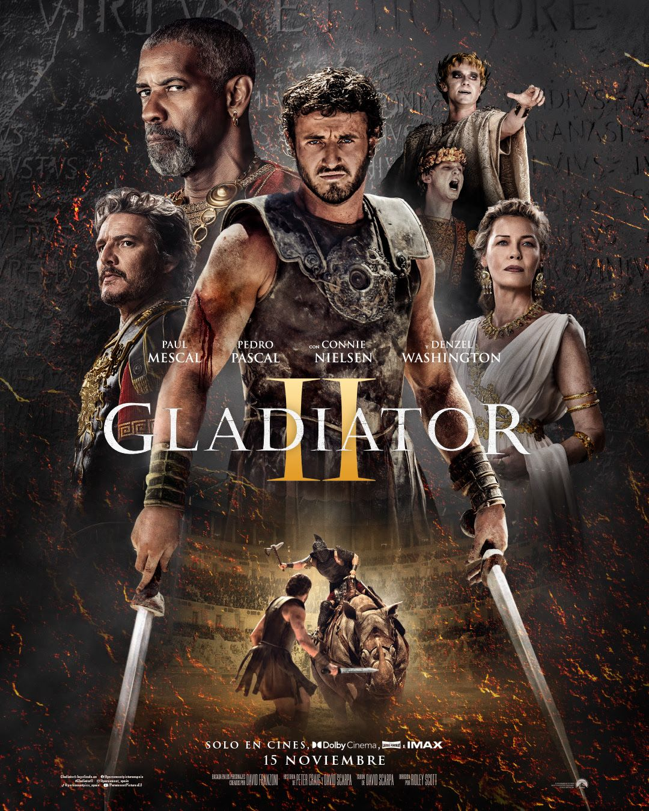
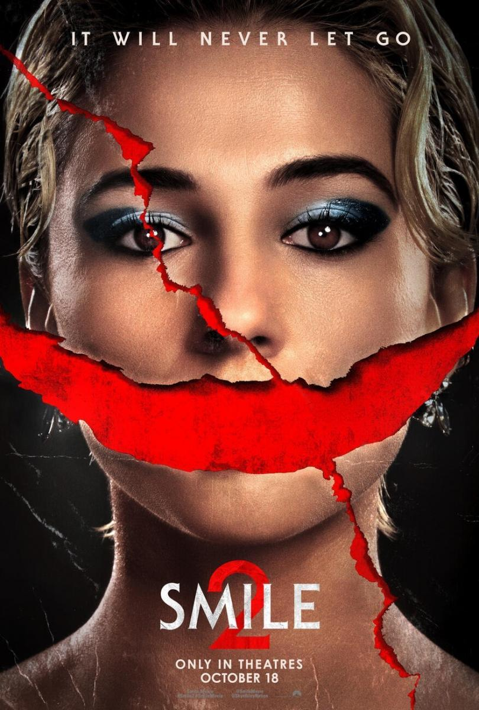
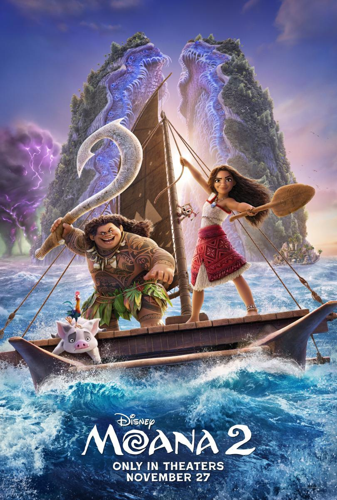

EL JOKER

Todos estábamos a la espera de la segunda parte de esa película.
Parece ser que lo de las segundas partes nunca fueron buenas se vuelve a hacer realidad en este caso.
Era muy esperada ya que la primera parte gustó mucho, pero al parecer no ha gustado mucho ya que ha sido muy criticada, esta segunda es un tipo de musical que pasa en la cabeza del joker y un juicio que dura las 2 horas de película, nada de lo que se esperaba después de la primera.
Sinopsis.
Gladiator II.

Una de las más esperadas del año, ya se comenta que habrá batalla naval en el coliseo y con los efectos especiales actuales creo que no pasará indiferente.
Los críticos avisan, no esperes una película documentada en la historia real de roma, esta producción ha sido creada para entretener.
Personalmente diré que me ha gustado como película de entretenimiento, por que creo que a nivel guión y trama... se queda corto. En cinco segundos se resuelve todo y en ese aspecto podría haber sido mucho mejor.
Sinopsis.
Smile II.

La secuela de Smile, película de terror.
Una estrella de Pop que está infectada de una maldición que te hace ver a personas con una siniestra sonrisa, hasta que te desvives y pasas la maldición. Todo ello acompañado de un gore brutal.
A destacar la interpretación de Naomi Scott que según las críticas es excepcional. Además acompaña una crítica al mundo del espectáculo.
Sinopsis.
Vaiana.

Tengo una curiosidad que seguramente te has preguntado antes al igual que yo y otros lectores.
¿Porque el nombre en España y otros países es Vaiana y no Moana como en la versión original?
Pues os diré que por dos razones: la primera es que ya hay una marca registrada de un perfume y con el nombre de Moana en varios países europeos.
La segunda razón es que en Italia hay una película para adultos con este mismo nombre y para que los niño al buscar su película favorita en internet no dieran con algo para mayores de edad han hecho este cambio.
Sinopsis.